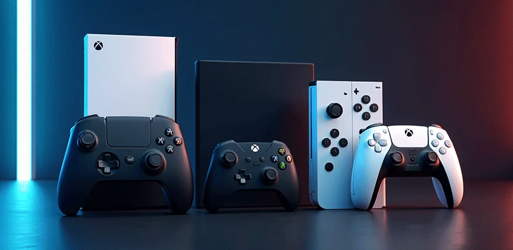

Somos un equipo apasionado por el mundo gamer, convencido de que cada juego tiene el poder de unir, inspirar
y transformar momentos cotidianos en algo inolvidable.
Nacimos con una idea clara: construir un lugar donde todos los gamers expertos, jugadores casuales, familias
o curiosos puedan sentirse en casa. Un espacio confiable, moderno y auténtico donde encontrar no solo
tecnología, sino historia, comunidad y emoción.
En Back To The Game no solo vendemos consolas: creamos experiencias que despiertan emociones, conectan
recuerdos y ofrecen nuevas aventuras.
Ofrecer una experiencia de compra fácil, clara y sin enredos para que las personas vuelvan a disfrutar de esos juegos que marcaron su vida. Un espacio donde se encienda la pasión al ver una consola retro o un juego que no pasa de moda, creando así experiencias inolvidables.
Posicionarnos como el mejor e-commerce reconocidos por ofrecer innovación y el mejor servicio gamer de la industria. Queremos construir un lugar donde la gente se sienta en casa, donde lo inolvidable cobre vida y se pueda conectar con emociones y recuerdos.